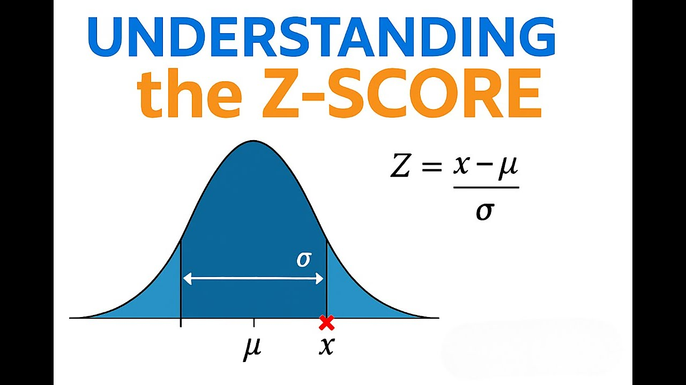
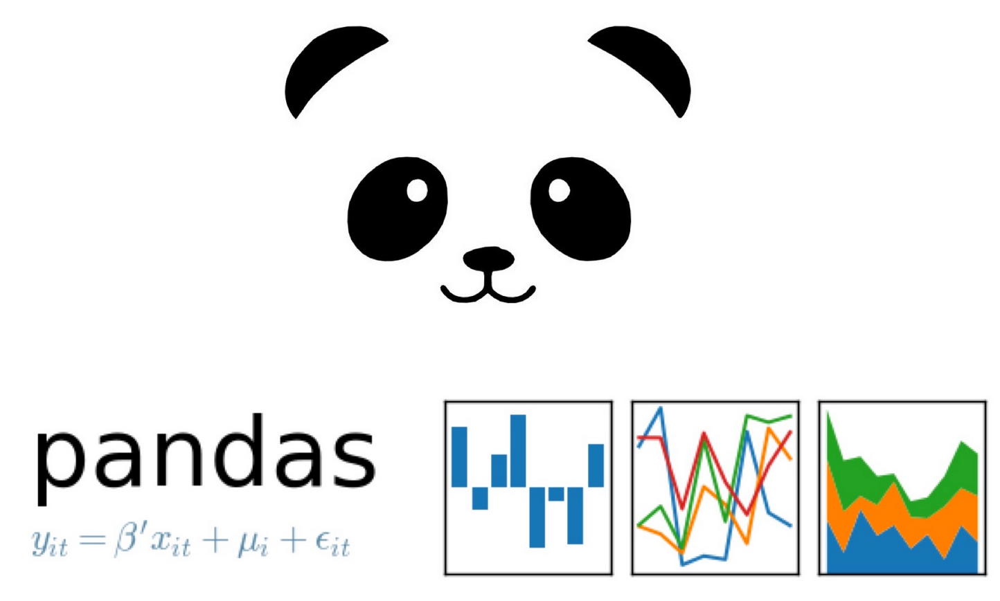
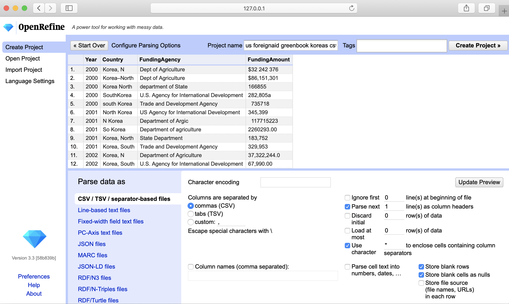
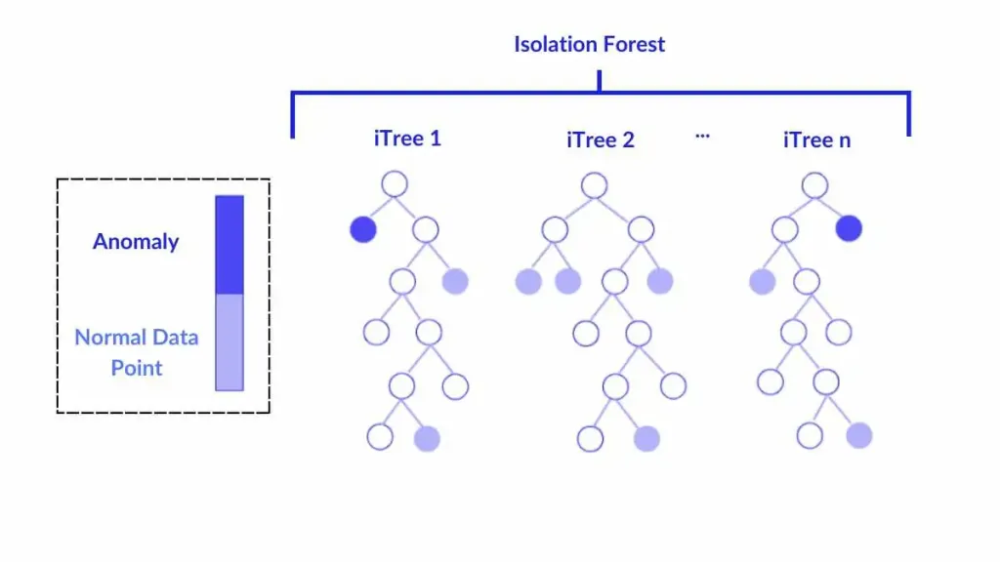
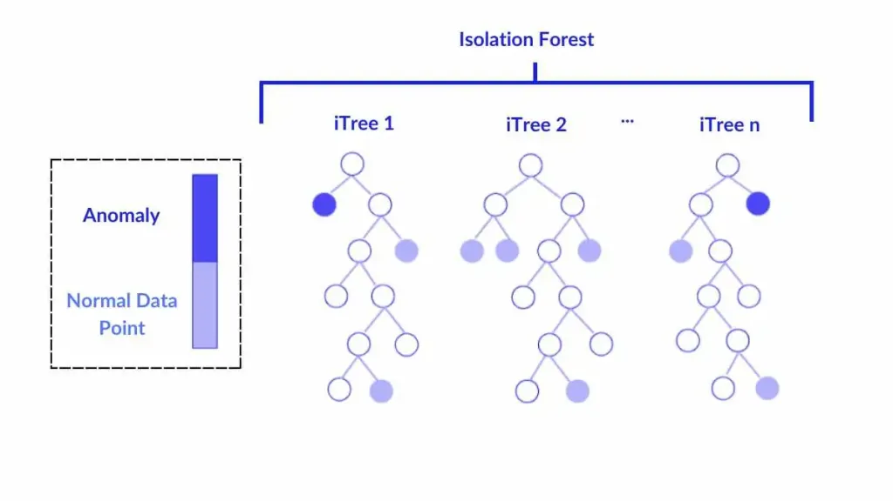

iPAS AI應用規劃師 經典題庫
L22201 數據收集與清理
出題方向
1
數據來源與收集方法
2
數據品質維度與評估
3
缺失值處理策略
4
異常值偵測與處理方法
5
重複數據與不一致數據處理
6
數據驗證與確效
7
數據清理工具與技術
8
數據收集與清理的倫理考量
#1
★★★★
下列何者不是常見的結構化數據來源？
答案解析
結構化數據通常具有固定的格式和綱要，易於儲存和查詢。關聯式資料庫（A）、CSV 或
Excel 檔案（B）以及 ERP
系統中的交易記錄（D）都是典型的結構化數據來源。社群媒體上的使用者貼文和評論（C）通常包含自由格式的文本、圖片、表情符號等，屬於非結構化數據或半結構化數據，需要透過自然語言處理（NLP）等技術進行分析。
#2
★★★★★
數據品質的「完整性」（Completeness）維度主要關注的是？
答案解析
數據品質通常從多個維度進行評估：
- 準確性（Accuracy）：數據是否正確反映事實（A）。
- 完整性（Completeness）：數據是否有缺失或遺漏（B）。
- 一致性（Consistency）：同一數據在不同地方或不同時間是否一致，格式是否統一（C）。
- 及時性（Timeliness）：數據是否在需要時可用，是否足夠新（D）。
- 有效性（Validity）：數據是否符合預定義的規則、格式或範圍。
- 唯一性（Uniqueness）：數據是否存在重複記錄。
#3
★★★★★
在處理數值型特徵的缺失值時，如果數據分佈呈現明顯的偏態（Skewed），使用下列哪種填補（Imputation）方法通常比使用平均數（Mean）更為穩健？
答案解析
平均數容易受到極端值（Outliers）的影響。當數據分佈存在明顯偏態時，通常也伴隨著極端值的出現，這些極端值會將平均數拉向偏斜的方向，使得平均數不能很好地代表數據的中心趨勢。相比之下，中位數是排序後位於中間的值，不受極端值的影響。因此，在處理偏態分佈數據的缺失值時，使用中位數進行填補通常比使用平均數更為穩健（Robust），更能反映數據的典型水平。

#4
★★★★★
使用 Z 分數（Z-score）來偵測異常值時，通常將絕對值大於多少的 Z
分數視為可能的異常值？
答案解析
Z 分數衡量的是一個數據點距離其平均數有多少個標準差。如果數據大致服從常態分佈，根據經驗法則，約 99.7%
的數據會落在平均數正負 3 個標準差的範圍內。因此，落在這個範圍之外的數據點（即 Z
分數的絕對值 |Z| > 3）通常被認為是比較罕見的，可能是異常值。這是一個常用的經驗閾值，但實際應用中閾值（如 2.5 或
3.5）的選擇可能需要根據數據特性和業務背景進行調整。

#5
★★★★
在數據清理過程中，發現 "New York" 和 "NY"
指的是同一個城市，這種情況屬於哪類數據品質問題？應如何處理？
答案解析
當同一個真實世界的實體（如城市、人名、產品）在數據集中存在多種不同的表示方式時，就產生了數據不一致的問題。這會導致分組、計數或關聯分析時出現錯誤。處理這類問題的關鍵是數據標準化，即定義一個統一的標準表示法，並將所有不同的變體都轉換為這個標準格式。例如，可以建立一個映射規則，將
"NY", "New York
City" 等都統一轉換為 "New York"。
#6
★★★★
數據驗證規則（Data Validation Rules）通常用於檢查數據是否符合預定義的條件，下列何者不屬於常見的驗證規則類型？
答案解析
數據驗證旨在確保數據輸入或轉換後的基本有效性和合規性。常見的驗證規則包括：
- 數據類型檢查：確保欄位類型正確（如數值、字串、日期）。
- 範圍檢查：確保數值在允許的最小值和最大值之間。
- 格式檢查：確保字串符合特定模式（如身分證號、電話號碼、電子郵件）。
- 集合檢查：確保值屬於一個預定義的允許值列表（如國家代碼）。
- 唯一性檢查：確保某欄位的值是唯一的（如使用者 ID）。
- 必填性檢查：確保重要欄位沒有缺失值。
- 跨欄位檢查：確保不同欄位之間的邏輯關係成立（如出貨日期不能早於訂單日期）。
#7
★★★★
Python 語言中，哪個函式庫是進行數據處理、清理和分析最核心、最常用的工具之一？
答案解析
Pandas 是 Python 生態系統中用於數據處理和分析的基石函式庫。它提供了高效能、易於使用的數據結構，主要是 DataFrame（二維表格數據）和 Series（一維數據）。Pandas
提供了豐富的功能，用於：

- 讀取和寫入各種數據格式（CSV, Excel, SQL, JSON 等）。
- 數據索引、選擇和切片。
- 數據清理（處理缺失值、重複值、轉換數據類型）。
- 數據轉換和重塑（合併、分組、聚合）。
- 時間序列數據處理。
#8
★★★★
在數據收集用於 AI 模型訓練時，遵循「資料最小化」（Data Minimization）原則的主要目的是？
答案解析
資料最小化是許多數據隱私法規（如 GDPR）和倫理指南中的核心原則。它要求組織在收集和處理個人數據時，應僅限於為達成明確、合法目的所直接相關且必要的範圍。避免收集過多、非必要的數據可以：(1)
降低隱私風險：一旦發生數據洩露，暴露的敏感資訊較少。(2) 減輕合規負擔：需要管理的數據量減少，更容易滿足法規要求（如用戶的刪除請求）。(3)
降低儲存和處理成本。(4) 可能減少偏見來源：避免引入不相關但可能帶有偏見的特徵。雖然有時更多數據可能提升模型準確率（A），但必須在效益與隱私風險之間取得平衡。
#9
★★★★
哪種缺失值類型表示數據的缺失與觀測到的其他變數或缺失值本身有關，這種情況下直接刪除缺失值可能導致結果偏誤？
答案解析
缺失值的機制通常分為三類，其特性比較如下：
| 類型 | 全名 | 缺失原因 | 處理影響 |
|---|---|---|---|
| MCAR | 完全隨機缺失 (Missing Completely At Random) |
與任何觀測到或未觀測到的變數都無關。 | 最理想情況，直接刪除對結果影響最小。 |
| MAR | 隨機缺失 (Missing At Random) |
僅與其他觀測到的變數有關。 | 直接刪除可能導致偏誤，可使用填補方法處理。 |
| MNAR | 非隨機缺失 (Missing Not At Random) |
與缺失值本身或未觀測到的因素有關。 | 直接刪除或簡單填補會導致嚴重偏誤，處理最困難。 |
題目描述的是缺失與觀測變數或缺失值本身有關，最符合 MAR 或 MNAR 的情況，而其中 MNAR 是直接刪除最可能導致偏誤的類型。
#10
★★★★
基於箱型圖（Box Plot）偵測異常值時，通常將落在哪個範圍之外的數據點視為可能的異常值？（IQR 為四分位距）
答案解析
箱型圖提供了一種基於四分位數的異常值偵測標準。首先計算第一四分位數 Q1 和第三四分位數
Q3，以及四分位距 IQR = Q3 - Q1。然後定義內籬笆（Inner Fences）或稱上下界限：
- 下限 = Q1 - 1.5 * IQR
- 上限 = Q3 + 1.5 * IQR

#11
★★★★
數據清理中，處理大小寫不一致問題（如 "apple", "Apple",
"APPLE"）的標準方法是？
答案解析
大小寫不一致是常見的數據不一致問題，會導致計數、分組或匹配時將同一個詞視為不同。最標準且簡單的處理方法是將所有文本數據統一轉換為全部大寫或全部小寫。這樣可以確保 "apple", "Apple",
"APPLE" 都被視為同一個詞彙，方便後續處理。選擇轉換為大寫還是小寫通常取決於具體應用或習慣，但關鍵是要保持一致性。
#12
★★★
正則表達式（Regular Expression, Regex）在數據清理中常用於執行哪些任務？
答案解析
正則表達式是一種強大的文本處理工具，它使用一種特殊的語法來定義字串的搜尋模式。在數據清理（尤其是文本數據清理）中，正則表達式非常有用，可以用於：
- 驗證格式：檢查字串是否符合特定格式（如郵遞區號、電話號碼、日期）。
- 提取資訊：從非結構化文本中提取特定訊息（如從日誌中提取 IP 位址、從網頁中提取電子郵件）。
- 替換或移除字元：移除標點符號、特殊字元、HTML 標籤等。
- 分割字串：根據特定模式分割文本。
#13
★★★
透過 API（Application Programming Interface）收集數據相比於網頁爬取的主要優勢通常是？
答案解析
許多網站或服務會提供公開的 API
接口，允許開發者以程式化的方式獲取其數據或使用其功能。相比於直接爬取 HTML 網頁，使用 API 的優勢在於：(1) 結構化數據：API 返回的數據通常是結構化的（如
JSON 或 XML），易於解析和處理，無需像爬蟲那樣解析 HTML 結構。(2) 穩定性：API 接口通常比網頁結構更穩定，不易因網站改版而失效。(3) 合規性與速率限制：使用 API 是服務提供者允許的方式，通常會明確說明使用規範和速率限制，避免了爬蟲可能引發的法律風險和被封鎖的問題。(4)
效率：直接獲取所需數據，無需下載和解析整個網頁。當然，API 提供的數據範圍和功能受限於提供者（A
錯誤），且通常需要身份驗證（D 錯誤）。速度（C）則不一定。
#14
★★★
數據剖析（Data Profiling）是指什麼過程？
答案解析
數據剖析是數據理解和數據品質評估的重要環節。它涉及系統性地檢查數據源，以獲取關於數據的元數據（Metadata）和洞察。主要活動包括：
- 識別數據類型、格式和長度。
- 計算基本統計量（最小值、最大值、平均數、中位數、標準差）。
- 計算數值的分佈情況（如頻率、百分位數）。
- 識別鍵（Keys）和相依性。
- 檢查數據的完整性（缺失值比例）。
- 檢查數據的唯一性（重複值比例）。
- 檢查數據的有效性（是否符合模式或範圍）。
#15
★★★
多重插補（Multiple Imputation）相比於單一插補（如均值填補）的主要優點是？
答案解析
單一插補（Single Imputation）方法，無論是均值、中位數還是迴歸填補，都只是用一個「最佳猜測」值來替換缺失值。這樣做會低估數據的不確定性，導致計算出的標準誤偏小，信賴區間偏窄，假設檢定的 P
值也可能偏小，從而可能得出過於樂觀或錯誤的統計推斷結論。多重插補（MI）則試圖解決這個問題。它不是只生成一個填補值，而是基於缺失值的預測分佈，隨機生成多個（例如 M=5 或 10 個）可能的填補值，從而創建出 M
個完整的數據集。然後在每個完整的數據集上進行所需的統計分析（如迴歸分析），最後再根據一定的規則（Rubin's
Rules）將這 M 個分析結果合併起來，得到最終的參數估計和考慮了填補不確定性的標準誤。MI 的結果通常比單一插補更可靠，但計算也更複雜（A 錯誤）。
#16
★★★
基於距離的異常值偵測方法（如 KNN Outlier Detection）的基本假設是？
答案解析
基於距離的異常值偵測方法的核心思想是利用數據點之間的距離來判斷其是否異常。它們的基本假設是：正常數據點傾向於聚集在一起，形成密集的區域；而異常值則通常遠離其大部分的鄰居，處於相對孤立或稀疏的區域。例如，KNN 異常偵測會計算每個數據點與其 k
個最近鄰居的平均距離（或到第 k 個鄰居的距離），距離特別大的點就被認為是異常值。這類方法不需要對數據分佈做假設（C
錯誤），並且可以處理非線性結構，但對距離度量的選擇和高維數據（維度災難）比較敏感。

#17
★★★
模糊匹配（Fuzzy Matching）技術主要用於處理哪類數據品質問題？
答案解析
精確匹配要求兩個字串完全相同才能視為匹配。然而，在真實世界的數據中，由於拼寫錯誤、縮寫、不同記錄方式等原因，代表同一個實體的字串可能存在微小差異（例如 "John Smith" vs "Jon
Smith", "Ltd." vs "Limited"）。模糊匹配技術（也稱近似字串匹配 Approximate String Matching）使用各種演算法（如編輯距離 Levenshtein
Distance、Jaro-Winkler 距離、語音演算法 Soundex
等）來計算兩個字串之間的相似度分數。透過設定一個相似度閾值，可以找出那些雖然不完全相同但可能指向同一個實體的記錄，用於數據連接（Record
Linkage）、去重（Deduplication）和標準化。
#18
★★
對清理後的數據集進行再次驗證或抽樣檢查的目的是？
答案解析
數據清理是一個複雜且容易出錯的過程。採取的清理策略（如填補、刪除、轉換）本身可能並不完美，甚至可能無意中引入新的問題（例如，填補方法不當導致分佈失真）。因此，在完成主要的清理步驟後，進行一輪驗證是良好的實踐。這可以透過重新運行數據剖析、抽樣檢查數據記錄、或使用獨立的驗證規則來檢查清理後的數據是否達到了預期的品質標準，以及清理過程是否產生了非預期的副作用。這有助於確保最終用於分析或建模的數據是可靠的。
#19
★★★
ETL（Extract, Transform, Load）是數據整合和處理中常見的流程，其中的「Transform」階段主要執行什麼任務？
答案解析
ETL
流程描述了將數據從源系統移動到目標系統（通常是數據倉儲或數據湖）的標準步驟：
- Extract（提取）：從一個或多個異質的源系統（如資料庫、檔案、API）讀取數據。
- Transform（轉換）：這是數據處理的核心階段，涉及對提取出的原始數據進行各種操作，以使其適用於分析或目標系統的格式。常見的轉換操作包括：數據清理（處理缺失、異常、重複、不一致）、數據驗證、數據類型轉換、格式標準化、單位換算、數據聚合（計算總和、平均值等）、數據拆分或合併、衍生新欄位（特徵工程）等。
- Load（載入）：將經過轉換和清理的數據寫入到目標系統中。
#20
★★★
在數據收集階段，如果未明確告知使用者數據將被如何使用，或者未獲得必要的同意，主要會引發哪方面的倫理與法律風險？
答案解析
現代數據保護法規（如歐盟的 GDPR
和台灣的個資法）非常強調透明度和使用者同意原則。在收集個人數據之前，組織有義務清楚地告知使用者：將收集哪些數據、收集的目的、數據將如何被使用、儲存多久、與誰共享等資訊。並且，在大多數情況下（除非有其他法定豁免事由），需要獲得使用者明確的、知情的同意才能收集和處理其個人數據。如果未能履行告知義務或未獲取有效同意，就擅自收集或使用個人數據，將構成對個人隱私的侵犯，並可能嚴重違反相關法律法規，面臨高額罰款和聲譽損害。
#21
★★
網路爬蟲（Web
Crawler/Spider）主要用於收集哪種類型的數據？
答案解析
網路爬蟲是一種自動化程式，用於瀏覽網際網路並收集網頁上的資訊。它會從一個或多個起始網頁開始，下載網頁內容，解析其中的連結，然後繼續訪問這些連結指向的其他網頁，如此循環往復。爬蟲主要用於從公開可訪問的網站上抓取數據，例如搜索引擎建立索引、收集新聞報導、監控商品價格、抓取社群媒體內容等。收集到的數據通常是非結構化或半結構化的 HTML
內容，需要進一步解析和清理。
#22
★★★★
數據品質維度中的「有效性」（Validity）是指？
答案解析
有效性（也稱合規性 Conformity 或完整性 Integrity，但注意與 Completeness 區分）關注的是數據是否遵守了既定的規則和約束。例如：
- 一個表示「月份」的欄位，其值必須在 1 到 12 之間才是有效的。
- 一個表示「性別」的欄位，其值可能只允許是 '男', '女' 或 '其他'，輸入 'M' 或 'F' 可能被視為無效（除非預先定義）。
- 一個電子郵件地址欄位，其值必須符合電子郵件的標準格式才是有效的。
#23
★★★
對於類別型特徵的缺失值，下列哪種填補方法比較常用？
答案解析
平均數和中位數是針對數值型數據的集中趨勢量數，不適用於類別型數據（A, C
錯誤）。對於類別型特徵的缺失值，常用的簡單填補方法是使用該欄位中出現次數最多的類別（眾數）來填補。另一種常見做法是將缺失值本身視為一個獨立的新類別，例如用 "Missing", "Unknown"
或一個特殊符號來表示，這樣可以保留缺失的資訊，讓模型自己學習其可能代表的意義。迴歸填補（D）通常用於數值型數據，雖然有類似的分類模型可用於預測類別缺失，但眾數填補或視為新類別更為直接常用。
#24
★★★
在處理偵測到的異常值時，下列哪種處理方式可能會引入偏誤或損失資訊？
答案解析
異常值不一定都是錯誤的數據，它們有時可能代表了真實但罕見的事件、重要的極端情況或數據產生過程中的特殊模式。直接刪除所有異常值（D）雖然簡單，但可能：(1) 損失有價值的訊息：如果異常值是真實的，刪除它們會導致對現象的理解不完整。(2) 引入偏誤：如果異常值的出現不是隨機的，刪除它們可能會使樣本不再能代表母體。(3) 影響模型性能：某些情況下，模型需要學會處理這些極端情況。因此，在處理異常值前，應先嘗試理解其產生的原因。可能的處理方式包括：(A) 單獨分析；(B) 使用對異常值不敏感的模型或方法；(C) 進行數據轉換限制其影響；或者，如果確認是數據錯誤，則進行修正或刪除。直接刪除應謹慎使用。
#25
★★★
識別數據集中完全重複的記錄（Exact Duplicates）後，保留哪一筆記錄通常是合理的做法？
答案解析
對於完全重複的記錄（所有欄位的值都相同），通常的處理方式是只保留其中一筆，刪除其餘的重複項。至於保留哪一筆，並沒有絕對統一的標準，可以根據實際情況選擇：
- 保留最早的：如果認為最早的記錄最原始或最準確。
- 保留最新的：如果認為最新的記錄反映了最新狀態。
- 隨機保留一筆：如果沒有特別理由偏好哪一筆。
- 根據其他欄位判斷：如果某些欄位（如數據來源質量、完整性）可以幫助判斷哪筆記錄更可靠，則優先保留該筆。
#26
★★★
Python 的 Pandas 函式庫中，
isnull() 或 isna() 方法主要用於做什麼？
答案解析
isnull() 和 isna() 是 Pandas 中功能相同的方法（isna
是較新的名稱，建議使用），它們返回一個與原數據結構（DataFrame 或 Series）相同形狀的布林（Boolean）對象，其中元素為 True
表示對應位置的值是缺失值（通常是 NaN - Not a Number，或 Python 的
None），為 False
則表示不是缺失值。這兩個方法是識別缺失數據的第一步，常與 .sum()
結合使用來計算每列的缺失值數量，或用於布林索引來選擇包含或不包含缺失值的行/列。#27
★★★
在數據收集和清理過程中，建立清晰的數據字典（Data Dictionary）或元數據（Metadata）記錄的主要目的是？
答案解析
數據字典或元數據是「關於數據的數據」。它詳細描述了數據集中每個欄位（變數）的資訊，例如：
- 欄位名稱
- 數據類型（整數、浮點數、字串、日期等）
- 欄位描述或業務定義
- 單位（如公斤、公尺、美元）
- 允許的取值範圍或類別列表
- 是否允許空值
- 數據來源
- 計算公式（如果是衍生欄位）
#28
★★
下列何者是透過觀察或實驗直接收集的第一手數據？
答案解析
數據來源可以分為：
- 初級數據（Primary Data）：由研究者為了特定的研究目的，親自透過調查、訪談、觀察、實驗等方式直接收集到的第一手原始數據。例如，自己設計並發放問卷收集到的回覆（A）。
- 次級數據（Secondary Data）：由他人或機構先前為其他目的所收集並發布的數據，研究者加以利用。例如，政府統計報告（B）、已發表的研究數據（C）、媒體引用的數據（D）等。
#29
★★★
局部異常因子（Local Outlier Factor, LOF）是一種用於偵測異常值的演算法，它的基本原理是基於數據點的什麼特性？
答案解析
LOF 是一種基於密度的異常值偵測演算法。它不是看數據點與全局平均值的距離，而是比較一個數據點的局部密度與其鄰居們的局部密度。一個數據點的局部密度通常與其到鄰近點的距離有關（距離越近，密度越高）。LOF
計算每個點的「局部異常因子」分數，這個分數衡量的是該點的密度與其鄰居密度的比值。如果一個點的密度遠低於其鄰居的密度（即該點位於一個相對稀疏的區域，而其鄰居位於密集區域），那麼它的
LOF 分數就會很高，被認為是異常值。LOF
的優點是能夠偵測到不同密度簇中的異常點，而不僅僅是全局的離群點。

#30
★★
去除字串兩端的空白字元（Whitespace）是數據清理中常見的步驟，可以使用
Python 字串的哪個方法來完成？
答案解析
字串兩端（開頭和結尾）多餘的空白字元（包括空格、定位符、換行符等）可能導致比較或匹配失敗。Python 的內建字串方法
strip()
可以用來移除字串首尾的空白字元。如果只想移除開頭的空白，可以使用 lstrip()；如果只想移除結尾的空白，可以使用
rstrip()。lower()（A）用於轉小寫。split()（C）用於分割字串。replace()（D）用於替換字串中的子字串。
#31
★★★
數據確效（Data Validation）與數據驗證（Data Verification）的區別在於？
答案解析
雖然這兩個術語有時會混用，但在軟體工程和數據管理中通常有區別：
- 驗證（Verification）：關注的是「我們是否正確地構建了產品/處理了數據？」（Are we building the product right? / Is the data accurate and consistent?）。它檢查數據是否符合技術規範、格式要求、轉換是否正確執行等。
- 確效（Validation）：關注的是「我們是否構建了正確的產品/數據是否適用？」（Are we building the right product? / Is the data suitable for its intended use?）。它檢查數據是否滿足業務需求、是否適合用於特定的分析或模型訓練、是否能達成預期目標。
#32
★★★
OpenRefine（前身為 Google Refine）是一個開源工具，主要用於進行什麼樣的數據處理任務？
答案解析
OpenRefine
是一個功能強大的桌面應用程式，專門用於處理和清理「雜亂」的數據。它提供了一個類似電子試算表的交互式界面，並結合了許多數據清理功能，例如：

- 數據探索：透過分面（Faceting）快速查看數據分佈和不一致性。
- 數據清理：處理拼寫錯誤、大小寫不一致、去除多餘空白、標準化格式等。
- 數據轉換：拆分/合併欄位、使用 GREL（General Refine Expression Language）進行複雜轉換。
- 數據擴充：連結外部數據源或 Web API 來豐富數據。
- 聚類與模糊匹配：找出相似或可能重複的值。
#33
★★★★
在數據清理過程中，如果發現數據中存在的偏見（Bias）可能會導致下游 AI 模型產生歧視性結果，從倫理角度出發，應該如何處理？
答案解析
數據偏見是導致 AI 產生不公平或歧視性結果的主要根源之一。從負責任
AI 和倫理的角度來看，不能忽略數據中存在的偏見（A 錯誤）。簡單地使用帶偏見的數據訓練模型可能會放大這種偏見（C
錯誤）。直接刪除所有相關特徵（D）可能會損失重要資訊，且不一定能完全消除偏見（偏見可能與其他看似中立的特徵相關聯）。負責任的做法應該是：(1) 識別與記錄：意識到偏見的存在及其可能的來源。(2) 評估影響：分析偏見對不同群體的潛在影響。(3) 考慮緩解：根據情況，在數據準備階段（如透過平衡數據、修改標籤）或模型訓練階段（如加入公平性約束）採取適當的技術手段來減輕偏見的影響，並在模型評估時使用公平性指標進行衡量。選擇何種策略需要仔細權衡。
#34
★★★
K-近鄰填補（KNN
Imputation）是如何利用數據來填補缺失值的？
答案解析
KNN 填補是一種基於實例（Instance-based）的缺失值填補方法。對於一個包含缺失值的樣本，它首先在數據集中找到與該樣本最相似（通常基於其他非缺失欄位的歐氏距離或其他距離度量）的 K 個完整樣本（即
K 個最近鄰居）。然後，利用這 K 個鄰居在缺失欄位上的值來估計（填補）原始樣本的缺失值。對於數值型特徵，通常使用這 K 個鄰居值的（加權）平均數；對於類別型特徵，通常使用這 K
個鄰居值的眾數。KNN
填補考慮了數據點之間的相似性，通常比簡單的均值/中位數填補更精確，但計算成本也更高。

#35
★★★
隔離森林（Isolation Forest）是一種用於異常偵測的演算法，它的基本原理是？
答案解析
隔離森林是一種基於集成樹的無監督異常偵測方法。它不依賴於距離或密度計算，而是利用了異常點的特性：異常點通常數量稀少且特徵值與正常點差異較大。隔離森林隨機地選取特徵和分割點來構建多棵隔離樹（iTree）。其核心思想是，異常點由於其稀疏和獨特性，在這些隨機樹中平均只需要較少的分割次數就能被完全隔離到一個葉節點；而正常點由於處於密集區域，通常需要經過更多次的分割才能被隔離。因此，可以根據一個點在多棵樹中被隔離所需的平均路徑長度來判斷其異常程度，路徑越短越可能是異常點。
 

#36
★★★
當處理不同來源合併的數據時，可能會出現同一個欄位使用不同單位的情況（例如，長度單位有公尺和英尺），這屬於哪種數據品質問題？
答案解析
當同一個概念（如長度、重量、貨幣）在數據集中使用不同的單位或表示方式時，就造成了數據的不一致性和缺乏標準化。如果直接對這些未經轉換的數據進行計算或比較（例如，將 1 公尺和 1
英尺直接相加），顯然會得到錯誤的結果。因此，在數據清理和轉換階段，必須識別出這些單位不一致的問題，並將所有值轉換為統一的標準單位（例如，全部轉換為公尺），以確保數據的可比性和計算的準確性。
#37
★★
在 Python Pandas 中，
drop_duplicates()
方法用於做什麼？答案解析
drop_duplicates()
是 Pandas DataFrame
提供的一個方便的方法，用於識別並移除重複的數據行。預設情況下，它會判斷完全相同的行（所有欄位值都一樣）為重複行，並保留第一個出現的，刪除後續的重複項。也可以透過參數指定基於哪些欄位的子集來判斷重複，以及保留哪一筆（第一筆
first 或最後一筆
last）。刪除缺失值通常用 dropna()（A）。刪除欄位用
drop() 並指定
axis=1（C）。填補缺失值用 fillna()（D）。
#38
★★
數據脫敏（Data Masking 或 Data
Obfuscation）技術的主要目的是？
答案解析
數據脫敏是一種重要的數據安全和隱私保護技術。當需要在非生產環境（如開發、測試、分析）中使用包含敏感個人資訊的數據時，直接使用原始數據風險很高。數據脫敏透過一系列技術（如替換、遮蔽、洗牌、加密、加噪等）對敏感欄位進行處理，生成一個看起來結構相似但敏感內容已被修改的數據版本。其目標是在盡可能保留數據的分析價值和可用性的前提下，去除或模糊化其中的個人識別資訊（PII），從而降低數據在非生產環境中被洩露或濫用的風險，滿足合規要求。
#39
★★
感測器（Sensor）數據通常具有什麼特性？
答案解析
來自物聯網（IoT）裝置或其他來源的感測器數據（如溫度、濕度、壓力、加速度、GPS 位置等）通常具有以下特性：
- 時間序列性：數據是按時間順序連續記錄的。
- 數據量大：感測器可能以高頻率持續產生數據。
- 可能包含噪聲：感測器讀數可能受到環境干擾或自身精度限制而產生噪聲。
- 可能存在異常值或缺失值：由於設備故障、傳輸問題等原因，可能出現異常讀數或數據丟失。
- 多源異構：可能同時收集來自多種不同類型感測器的數據。
#40
★★★
評估數據品質時，數據的「一致性」（Consistency）問題可能表現為？
答案解析
數據一致性是指數據在不同位置、不同時間或不同表示法之間沒有矛盾。不一致的表現包括：
- 表示法不一：同一個實體有多種寫法（如 "New York" vs "NY"）。
- 格式不一：日期、貨幣、單位等格式混亂。
- 跨來源矛盾：同一個客戶在 CRM 系統和訂單系統中的地址或電話號碼不同。
- 邏輯矛盾：違反業務規則（如出貨日期早於下單日期）。
#41
★★
單變數異常偵測（Univariate Outlier Detection）和多變數異常偵測（Multivariate Outlier
Detection）的主要區別在於？
答案解析
異常偵測可以從考慮的變數數量來區分：
- 單變數異常偵測：一次只檢查一個變數（特徵）的值。例如，單獨看「年齡」欄位，發現一個值是 200 歲，這就是單變數異常。常用的方法有 Z-score、箱型圖法。
- 多變數異常偵測：同時考慮兩個或多個變數的值。一個數據點在每個單獨變數上看可能都正常，但它們的組合卻可能是不尋常的。例如，一個人的身高很高但體重很輕，單獨看身高或體重可能都在正常範圍內，但兩者組合起來就很異常。常用的方法有基於距離（如 Mahalanobis 距離）、基於密度（如 LOF）、基於聚類或基於模型的方法。
#42
★
數據生命週期管理（Data Lifecycle Management, DLM）主要關注的是？
答案解析
數據生命週期管理是一套策略和流程，用於管理數據從產生到最終處置的整個存在期間。典型的階段可能包括：創建/獲取、儲存、使用、共享、歸檔（Archiving，長期保存但不常用）和銷毀（Destruction）。DLM
的目標是確保數據在每個階段都得到適當的管理，包括考慮數據價值、效能需求、安全要求、合規性（如保留期限）、成本效益等因素，並制定相應的策略（例如，將不常用的數據移至較低成本的儲存、按規定銷毀過期數據）。
#43
★★★
SQL（Structured Query Language）主要用於與哪種類型的數據儲存系統進行互動？
答案解析
SQL 是用於管理和操作關聯式資料庫（如 MySQL, PostgreSQL, SQL Server,
Oracle）的標準化查詢語言。它提供了定義數據結構（如創建表格 CREATE TABLE）、查詢數據（SELECT）、插入數據（INSERT）、更新數據（UPDATE）和刪除數據（DELETE）等命令。雖然一些 NoSQL
資料庫（如選項 C, D）或大數據查詢引擎也可能提供類 SQL 的接口，但 SQL 最核心和標準的應用是在 RDBMS 上。
#44
★★★
數據匿名化（Anonymization）技術的目標是移除或修改數據中的個人識別資訊（PII），但它可能面臨的主要挑戰是？
答案解析
雖然數據匿名化是保護隱私的重要手段，但它並非完美無缺。主要挑戰在於：(1) 可用性權衡：匿名化程度越高（移除或泛化的資訊越多），數據的分析價值和可用性通常會隨之降低。(2)
重新識別風險：即使移除了直接識別符（如姓名、ID），攻擊者仍可能利用剩餘的準識別符（Quasi-identifiers，如郵遞區號、出生日期、性別）並結合其他外部數據源，來重新識別出特定個體（例如連結攻擊 Linkage
Attack）。k-匿名（k-Anonymity）、l-多樣性（l-Diversity）、t-相近性（t-Closeness）以及差分隱私（Differential
Privacy）等是更進階的隱私保護技術，試圖在保護隱私和維持數據可用性之間取得更好的平衡，並抵抗重新識別攻擊。
#45
★
日誌數據（Log
Data）通常記錄了系統或應用程式的什麼資訊？
答案解析
日誌數據是由伺服器、網路設備、作業系統、應用程式等自動生成的記錄，用於追蹤其運行過程中的活動。典型的日誌內容包括：事件發生的時間戳記、事件類型（如登入、錯誤、請求）、來源 IP、操作內容、執行結果、用戶 ID
等。日誌數據是進行系統監控、故障排除、安全稽核、性能分析和使用者行為分析的重要數據來源，通常具有時間序列特性。
#46
★★
對於時間序列數據中的缺失值，除了使用前後值的平均數填補，還可以考慮哪種更複雜的填補方法？
答案解析
時間序列數據具有時間依賴性，簡單地使用全局均值或中位數填補可能忽略這種時間結構。更合適的方法包括：
- 向前填充（Forward Fill）/ 向後填充（Backward Fill）：使用前一個或後一個已知的值來填補。
- 插值法（Interpolation）：根據缺失點前後已知點的值，使用數學方法（如線性、多項式、樣條函數）來估計缺失值。
- 基於模型的填補：使用時間序列模型（如 ARIMA, Prophet）或機器學習模型，根據歷史數據來預測缺失點的值。
#47
★★
數據清理完成後，將清理腳本或流程進行文件化記錄的主要好處是？
答案解析
將數據清理的步驟、使用的工具、腳本程式碼以及做出的決策（例如，為何選擇某種填補方法、異常值處理標準等）進行詳細的文件化記錄，對於確保數據處理過程的品質和可靠性非常重要。主要好處包括：(1) 可重現性：其他人或未來的自己可以重複執行相同的清理流程。(2) 可追溯性：當發現數據問題時，可以追溯到是哪個清理步驟導致的。(3) 透明度與溝通：方便團隊成員理解數據是如何被處理的。(4) 知識傳承與複用：便於將清理流程應用到新的數據集或進行改進。
#48
★★
處理數據不一致時，建立一個「黃金記錄」（Golden Record）或「單一客戶視圖」（Single Customer
View）的目標是？
答案解析
在企業中，關於同一個客戶的資訊可能分散在多個不同的系統中（如 CRM、銷售系統、客服系統），並且可能存在不一致或重複。建立黃金記錄（或稱主數據管理 Master Data Management
的一部分）的目標是，透過數據匹配、合併和清理規則，將這些分散、不一致的記錄整合起來，為每個獨立的實體創建一個單一的、被認為是最新、最準確、最完整的「真實版本」（Single
Source of Truth）。這有助於提高數據品質，確保分析和決策基於一致、可靠的資訊。
#49
★
資料倉儲（Data Warehouse）的主要目的是？
答案解析
資料倉儲是一個專門設計用於分析和報告的數據儲存系統。它通常會整合來自企業內多個營運系統（如銷售、庫存、人力資源）的數據。這些數據在進入倉儲前會經過
ETL（提取、轉換、載入）過程，進行清理、轉換和標準化，並按照特定的主題（如客戶、產品、時間）進行組織。資料倉儲的數據通常是歷史性的、匯總性的、結構化的，並且針對讀取密集型的分析查詢（OLAP - Online Analytical
Processing）進行了優化，以支持商業智慧報表、儀表板和數據分析師的查詢需求。它與處理日常交易的操作型資料庫（OLTP）（A）不同，也與主要儲存原始、多樣格式數據的數據湖（Data Lake）（C）有所區別。
#50
★
數據治理（Data Governance）框架的建立對於確保數據收集與清理過程的哪個方面至關重要？
答案解析
數據治理是指一個組織內部用於管理其數據資產的一套規則、政策、標準、流程和控制措施。它旨在確保數據在其整個生命週期中都得到妥善的管理和使用。在數據收集與清理方面，數據治理框架可以：(1) 定義數據品質標準：明確什麼是「乾淨」、「完整」、「一致」的數據。(2) 制定數據收集政策：確保數據收集符合法律法規（如隱私保護）和倫理要求。(3) 建立數據安全規範：保護數據免受未授權訪問和洩露。(4) 明確角色與責任：指定誰負責數據品質、誰負責數據清理、誰負責數據安全等。(5) 建立流程與稽核機制：確保政策和標準得到執行。良好的數據治理是確保數據可信、可用、合規和安全的基礎。
沒有找到符合條件的題目。
↑